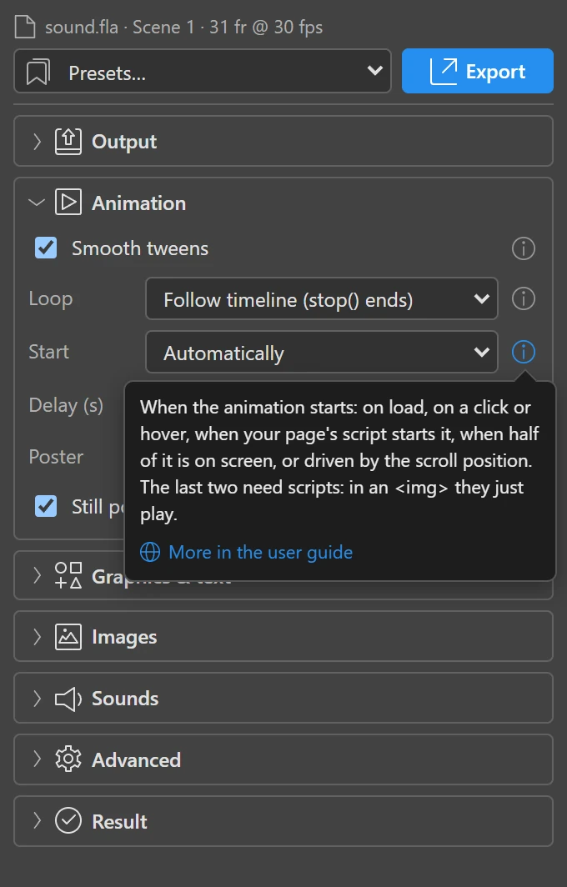
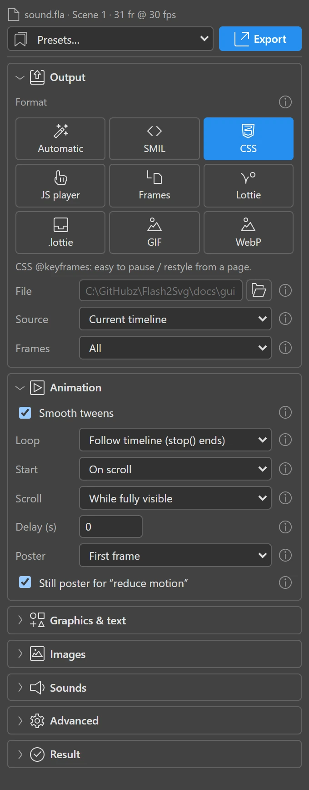
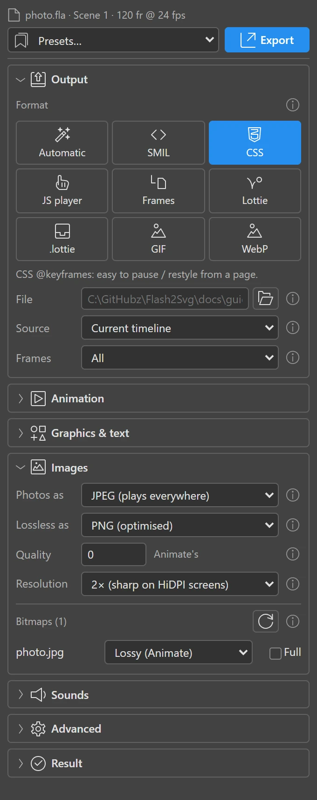
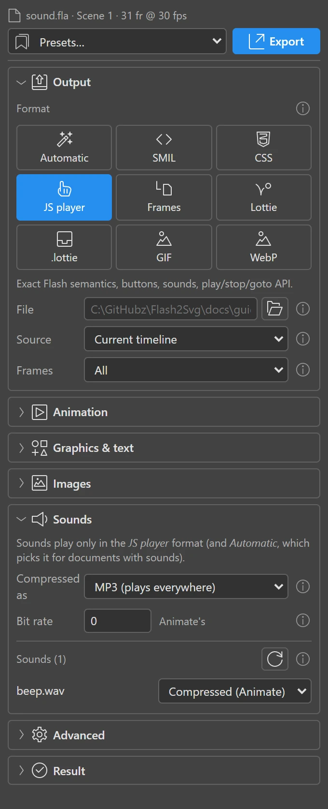
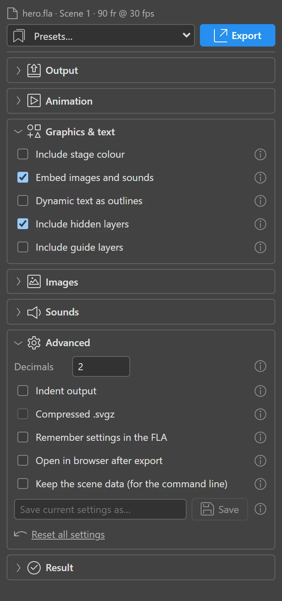
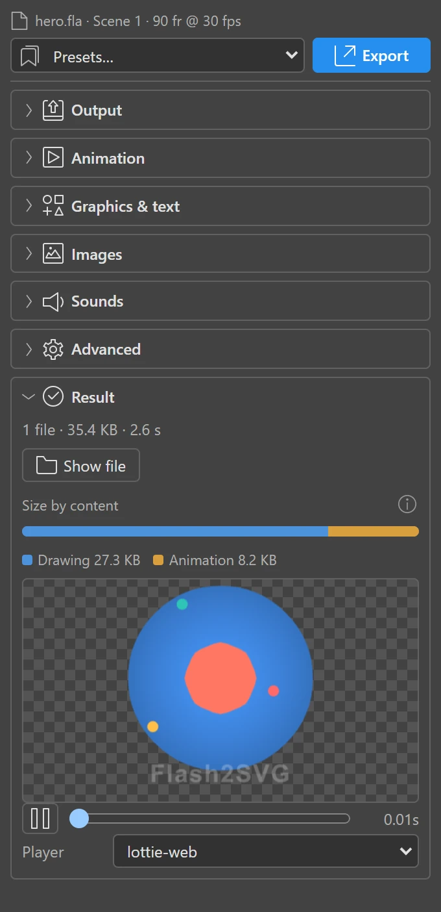

The panel
The panel works on the document in front of you. Its sections fold away; it remembers which are open and every setting, per user — and, if you like, inside the FLA.
Every setting has a small i at the right: point at it (or reach it with the Tab key) for a short explanation, click it to keep the explanation open; its link leads to the matching part of this guide.

The top bar
- The document name shows what will be exported.
- Presets… applies a set of settings at once. Built in: Web animation (SMIL), CSS animation, Interactive (JS player), Still frames, Smallest file and Inkscape / Illustrator (static). Your own presets appear below them (save them in Advanced).
- Export runs the export. While it runs, a progress bar shows what it is doing and Cancel stops it — your document is never touched either way.
Output
| Setting | What it does |
|---|---|
| Format | How the file animates: Automatic, SMIL, CSS, JS player, Frames, Lottie, .lottie, GIF, WebP. See Formats. |
| File | Where to write. Empty: next to the FLA, named after it. A name without a folder goes next to the FLA; a folder (ending in ``) gets the FLA's name inside it. The extension follows the format (a name ending in .svg becomes .json for Lottie; any other is kept and the format's added). The folder button opens a save dialog. |
| Source | Current timeline (the scene or symbol you are in), Selected library symbols (one file per symbol, named <file>_<symbol>; select them in the Library first — good for icon sets), or All scenes in a row, shown when the document has several scenes: they play one after the other as in Flash, and gotoAndPlay(5, "Scene 2"), nextScene() and prevScene() jump between them. |
| Frames | All; Current frame (always a still SVG); or a Range (first and last frame, 1-based). |
Animation
| Setting | What it does |
|---|---|
| Smooth tweens | On: tweens are interpolated between frames, as smooth as the screen allows (the "high frame rate" look). Off: one step per frame, exactly like the SWF. |
| Loop | Follow timeline plays as Flash would: frame scripts (stop(), gotoAndPlay()) decide; without them the timeline loops. Always loop and Play once override the scripts. |
| Start | Automatically, On click, On hover, From script (your page starts it), When visible (once half of it is on screen), On scroll (the scroll position drives it). See Interactivity. |
| Scroll range | With On scroll: While fully visible, While crossing the screen or With the whole page. |
| Delay | Seconds before it starts. |
| Poster | First frame or Last frame: shown where animation doesn't run, and to visitors who asked for reduced motion. |
| Still poster for "reduce motion" | On by default: visitors who turned animations off in their system see the poster, still. |

Graphics & text
| Setting | What it does |
|---|---|
| Include stage colour | Paints the stage background. Off: transparent, so the page shows through. |
| Embed images and sounds | On: everything in one file. Off: bitmaps and sounds are written next to it (bitmaps/, sounds/) and linked — smaller SVG, more requests. |
| Dynamic text as outlines | Draws dynamic and input text as shapes, exactly as Animate does. Off (default): it stays real, selectable text. |
| Embed fonts | The fonts of dynamic text go into the file as small WOFF2 subsets of the letters used. See Text and fonts. |
| Include hidden layers | Hidden layers are exported (as Flash publishes them by default). Untick to leave them out. |
| Include guide layers | Guide layers are never shown in Flash; tick to export them anyway. |
Images
Sets how bitmaps are written: the format for lossy pictures (JPEG, WebP, AVIF), for lossless ones (PNG, WebP lossless), the Quality (0 = each bitmap's own setting from Animate) and the Resolution — bitmaps shown smaller than their pixels are written smaller, by default down to twice the largest size they appear at. The list shows every bitmap: choose Lossy or Lossless per picture, or Full to keep all its pixels. Details in Images and sounds.

Sounds
Only the JS player plays sounds. Choose MP3 or Opus for compressed sounds and a bit rate (0 = each sound's setting from Animate). Each sound follows its compression in Animate, or choose Compressed or Uncompressed (WAV) for it.

Advanced
| Setting | What it does |
|---|---|
| Size | Stage size (fixed), or filling the space the page gives it like Flash's scale modes: Fill the space, show all, …no border (cropped), Stretch to the space. |
| Decimals | Precision on screen (default 2). Parts shown larger get more decimals, parts shown smaller fewer. |
| Indent output | Readable, bigger files. |
| Compressed .svgz | Gzipped SVG for design tools and servers set up for it. On the web, plain SVG compressed by the server is better (why). |
| Remember settings in the FLA | Stores the settings inside the document: whoever opens it gets them. |
| Open in browser after export | Shows the file right away. |
| Keep the scene data (for the command line) | Writes what the exporter read from Animate next to the output, as <name>.scene/. The command line exports it again with other settings, without Animate. |
| Presets | Save the current settings under a name; delete your presets; Reset all settings. |

Result
After an export: the number of files, their size and the time it took; Open in browser and Show file; the size overview; a preview; and the lists of images, sounds and warnings.
- The size overview splits the bytes into drawing, animation, images, sounds, fonts, runtime and linked files, and names the biggest drawings (for example "Scene 1 › fbf: 38.5 KB (150 drawings)").
- The preview plays the file as a browser would; scrub it with the slider. A Lottie or .lottie export plays in lottie-web or the dotLottie player (pick one); a .lottie with a click start waits for a click on the preview.
- Warnings explain what could not be reproduced exactly. Most are about features a format can't have, for example sounds outside the JS player.
